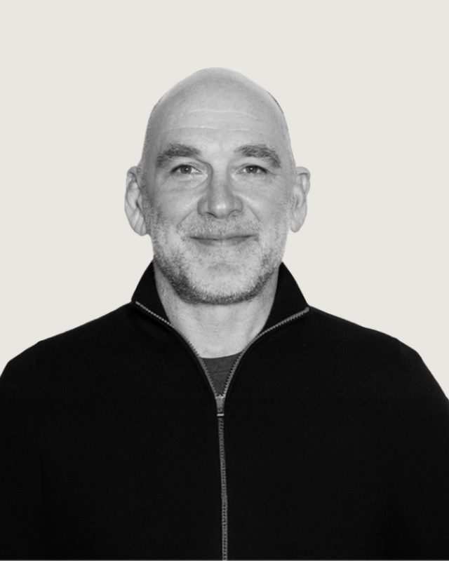
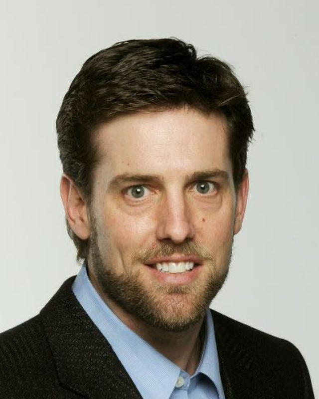
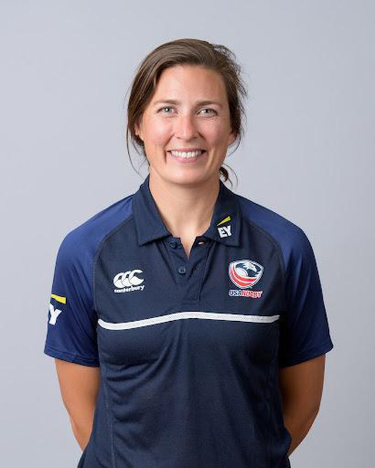

OF SPORT
Bozeman, MT, 59718
(314) 954-7194
jstephenson@montanainstituteofsport.org

Ali Behnam is the founder and managing partner of Riviera Partners, an executive search firm specializing in early-stage, venture-backed technology companies. Before establishing Riviera Partners, he co-founded Whitetruffle, an automated service connecting candidates with companies. His professional journey includes roles such as Vice President of Business Development at Opus360, Director of Operations at Kellwood Company, and positions at BearingPoint Consulting and Accenture. Ali earned his Bachelor of Arts in Economics and Statistics from the University of California, Irvine.
In recognition of his influence in the tech recruitment sector, Ali was featured in Business Insider’s article titled “10 People Who Can Get You The Best Jobs In Tech And Make You Rich,” highlighting key individuals pivotal to the technology industry’s vibrancy.
Throughout his career, Ali has emphasized the importance of relationship-building in recruitment, focusing on understanding client needs and fostering genuine connections.

Robert (Bobby) Beers, a native of Missoula, Mont., was a 1996 graduate of Western Montana College with a Bachelor of Science in secondary education.
He was a three-time all-conference selection at wide receiver, a two-time all-conference selection as kick returner and an All-American at wide receiver. He set nine school records and was part of a Bulldog team that won three straight Frontier Conference titles and 17 straight conference games.
After graduation, Beers taught and coached one year at Columbia Falls High School in Columbia Falls, Mont. His collegiate coaching resume included stops at San Jose State and Montana State. Beers moved to the professional ranks as the wide receiver and tight end coach for Berlin Thunder of NFL Europe. The Thunder won two World Bowl titles during his tenure. He was on the inaugural staff of the Colorado Crush of the Arena Football League.
Beers moved from coaching to scouting for the Denver Broncos. From 2009 to 2015, he was athletic director at Rocky Mountain College. He now owns and manages several businesses.
Beers and wife Cindy are the parents of Megan, Emily and R.J.
Originally from Missoula, Guy Almquist, a prominent figure in the financial landscape of Helena, Montana, has carved a distinguished career path marked by dedication, expertise, and community engagement. Born and raised in Montana, Guy developed a deep-rooted connection to his home state.
With a passion for finance and a keen eye for business opportunities, Guy embarked on his professional journey in the banking sector. His tenure at First Interstate Bank in Helena spans over 15 years, during which he has held various key roles, steadily climbing the ranks through his exemplary performance and leadership skills. Today, he is the Market President of First Interstate Bank in Helena.
Guy graduated from Carroll College in 1997 with a degree in business administration and management. While at Carroll, he also played on the basketball team and had a very impressive career earning him a spot in the Saints Athletic Hall of Fame. His love for basketball persists to this day through coaching Helena Capital High School’s boys’ varsity basketball team. He is married to Heather Almquist and is a loving father to four children.
Nick Simpson is a seasoned professional with a remarkable 26-year career in Private Banking. He began his journey in 1998 as an auditor at Citi Group Private Bank in London, right after graduating in Business Management from Napier University. In 2002, he made a significant move to San Francisco, still with Citi Group Private Bank.
In 2005, Nick joined First Republic Bank as a Private Bank Manager, where he successfully led a team of 150 bankers. Under his guidance, the team experienced extraordinary growth in households and deposits over the years. Their achievements culminated in an impressive rise from $100 million to over $15 billion, serving a remarkable 12,000 households.
He’s currently excited about his new role as a National Director of Citizens Private Bank.
Mike Dean is a Board Member, Advisor and Investor. He has been at the core of driving strategy, creating award winning marketing campaigns, and fostering a work culture that is both dynamic and positive. His career has provided him the opportunity to lead both domestic and international teams, some as large as 1,200 people.
During his professional life he has worked in a wide array of business settings from his own business to start-ups and the Group President of Experian, a FTSE 100 company. His most recent role was the Chief Strategy Officer at Lifelock, where he helped sell the company to Symantec, now Gen.
Mike Dean is an active investor in the fintech and consumer space with more than sixty early stage investments. He currently serves as an Advisor for Dovly and Impulsum Ventures; a Board Member for BigRentz, CarPay and Montana Institute of Sport and holds a bachelor’s degree in economics from the University of California, Irvine. He is married and has two children.

Emilie Bydwell, Head Coach of the U.S. Women’s National Rugby Team which recently secured the United States’ first Olympic medal in women’s rugby, brings a wealth of experience as both a player and a leader in the sport. A former member of the U.S. Women’s National Sevens Team, she played in three Rugby World Cups and was known for her strategic play and leadership on the field. Bydwell’s deep understanding of the game, combined with her passion for developing elite athletes, made her a natural fit for coaching, where she continues to elevate the team’s performance on the global stage.
Before becoming head coach, Bydwell held various leadership roles within USA Rugby’s high-performance programs. She served as the General Manager of Women’s High Performance, overseeing player development, talent identification, and the implementation of strategies to enhance the competitiveness of U.S. women’s rugby. Her focus on building a sustainable pathway for future generations of athletes has been instrumental in fostering a stronger rugby culture in the United States.
Bydwell is committed to advancing the women’s game through not only high-level competition but also by promoting inclusivity and growth at the grassroots level. She actively works on initiatives to inspire young women to take up the sport and strives to create opportunities for female athletes to thrive. As head coach, Bydwell is dedicated to leading the U.S. Women’s National Team to new heights, both in terms of their performance and the development of rugby as a whole in the country.